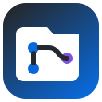

Polish dark mode tokens
다크 모드 토큰 다듬기
Updated now
방금 업데이트
acme-labs/design-system · #248

PR SidePull requests
Pull requests
acme-labs/design-system · #248
acme-labs/web · #731
acme-labs/docs · #184
Unofficial and independent · Pull-request data is processed in your browser
비공식·독립 확장 프로그램 · PR 정보는 브라우저 안에서 처리됩니다